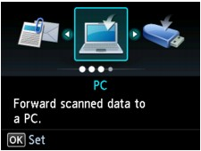
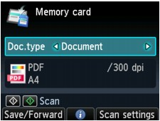

You can save scanned data on the memory card or USB flash drive using the Operation Panel.
 Important
Important-
Do not remove the memory card or USB flash drive from the machine under the following conditions:
-
While scanning is in progress
-
Before saving the scanned data
-
-
You cannot use the memory card and USB flash drive at the same time. Be sure to use either of them as a media for saving scanned data.
-
For safety reasons, we recommend backing up the scanned data saved on a memory card or USB flash drive to another media periodically to avoid unexpected accidents.
-
We assume no responsibility for damage to or loss of data for whatever reason even within the warranty period.
-
Make sure that the machine is turned on.
-
Press the SCAN button.
The screen for selecting to which you save the data is displayed.
 Note
Note-
If the Scan standby screen for forwarding the data to the USB-connected computer is displayed on the LCD, press the left Function button to display the screen for selecting to which you save the data.
-
-
Insert the memory card into the Card Slot or insert the USB flash drive into the Direct Print Port.
For information on how to insert the memory card/USB flash drive, or information on the types of the memory card compatible with the machine, refer to Printing Photos.
-
Select Memory card or USB flash drive, then press the OK button.
-
Select Save to memory card or Save to USB flash drive, then press the OK button.
The Scan standby screen is displayed.
* The following screen is the Scan standby screen for saving the data on the memory card.
 -
Use the

 button to select the document type for Doc.type.
button to select the document type for Doc.type.- Document
-
Scans the original on the Platen Glass or in the ADF applying the optimized settings for scanning a document.
- Photo
-
Scans the original on the Platen Glass applying the optimized settings for scanning a photo.
-
Press the right Function button to adjust the settings as necessary.
-
Load the original document on the Platen Glass or in the ADF.
Note-
Refer to Loading Paper / Originals for how to load the original.
-
You can confirm the procedure to load the original by pressing the center Function button.
-
-
Press the Color button for color scanning, or the Black button for black & white scanning.
If ON is selected for Preview on the scan settings screen and the original is loaded on the Platen Glass, the preview screen is displayed on the LCD after scanning. To rescan the original, press the left Function button. If you select PDF or Compact PDF for Format on the scan settings screen, you can rotate the scanning image on the preview screen by pressing the right Function button. To start saving, press the OK button.
-
If you load the original in the ADF:
The machine starts scanning and scanned data is saved on the memory card or USB flash drive.
-
If you load the original on the Platen Glass:
-
When you select other than PDF or Compact PDF for Format on the scan settings screen, the machine starts scanning and scanned data is saved on the memory card or USB flash drive.
-
When you select PDF or Compact PDF for Format on the scan settings screen, the confirmation screen asking you if you continue scanning is displayed after scanning is complete.
If you continue scanning, load the original on the Platen Glass and start scanning.
If you do not continue scanning, press the left Function button. The scanned data is saved on the memory card or USB flash drive in one PDF file.
When you scan the originals continuously, you can save up to 100 pages of images in one PDF file.
-
Remove the original on the Platen Glass or from the Document Output Slot after scanning is complete.
For information on how to remove the memory card/USB flash drive, refer to Printing Photos.
Note-
If the memory card or USB flash drive becomes full while scanning images is in progress, only the images already scanned can be saved.
-
You can save up to 2000 files of scanned data in both PDF and JPEG data format.
-
The folder and file name of scanned data saved on the memory card or USB flash drive is as follows:
-
Folder name: (file extension: PDF): CANON_SC\DOCUMENT\0001
-
Folder name: (file extension: JPG): CANON_SC\IMAGE\0001
-
File name: Running numbers, starting from SCN_0001
-
File date: The date and time of saving as set in the machine. For information on how to set the date and time, refer to Preparing for Faxing.
-
-
-
Importing the Scanned Data Saved on a Memory Card to the Computer
When you import the scanned data saved on a memory card to the computer, import the data after performing either of the operations below:
-Turning the machine off, then turn it back on.
-Removing the memory card, then reinsert it into the Card Slot.
You can optimize or print the scanned data saved on the memory card using MP Navigator EX.
For details, refer to Importing Images Saved on a Memory Card.
-
Importing the Scanned Data Saved on a USB Flash Drive to the Computer
You can import the scanned data saved on a USB flash drive to the computer. After scanning the data, connect the USB flash drive to the computer, then import the data.